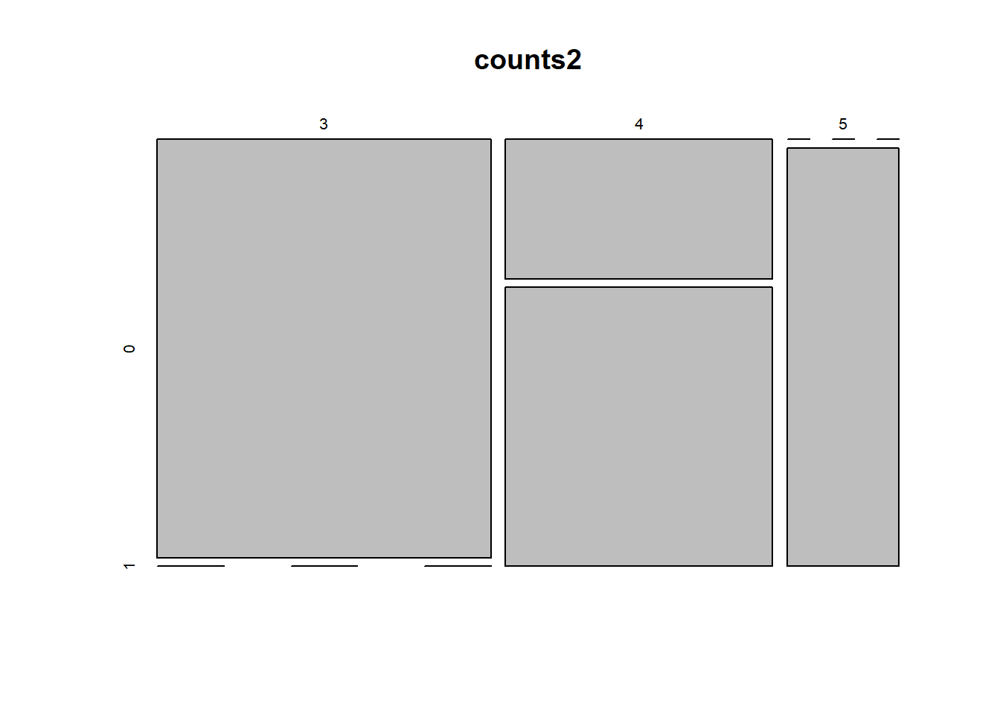

Chapter 5 Graphical Summaries
The graphical summary must match up with the type of variable(s).
| Variable | Type of summary |
|---|---|
| 1 Qualitative | (Single) Barplot |
| 1 Quantitative | Histogram or (Single) Boxplot |
| 2 Qualitative | Double Barplot, Mosaicplot |
| 2 Quantitative | Scatterplot |
| 1 Quantitative, 1 Qualitative | Double Boxplot |
5.1 ggplot
There are two main methods with which to plot within R, base R and ggplot. This section will teach you how to be proficient in both styles!
All base R plots can be done in ggplot, allowing much greater customisation. Base R by default is installed, however ggplot must be installed before use.
- To use ggplot first, download the package
ggplotinto RStudio. This is a one off command.
- Each time you open RStudio, load the
ggplot2package
See the ggplot cheatsheet here
5.2 Barplot
5.2.1 Base R Method
A barplot is used for qualitative variables.
Which variables are qualitative in
mtcars?Produce a single
barplotof the gears.
Notice this is not useful! This is because R has classified gear as a quantitative variable.
- Instead, first summarise
gearsinto a table as follows.
# Produce frequency table
table(mtcars$gear)
# produce barplot (from frequency table)
counts = table(mtcars$gear)
barplot(counts)- Now customise the barplot.
- Make the names of bars perpendicular to axis.
- Now consider 2 qualitative variables:
gearandcyl. Produce a double barplot by faceting or filtering the barplot ofgearbycyl.
counts1 = table(mtcars$cyl, mtcars$gear)
barplot(counts1,names.arg=c("3 Gears","4 Gears","5 Gears"),col=c("lightblue","lightgreen","lightyellow"),legend = rownames(counts1))
barplot(counts1,names.arg=c("3 Gears","4 Gears","5 Gears"),col=c("lightblue","lightgreen","lightyellow"),legend = c("4 cyl","6 cyl","8 cyl"))
barplot(counts1, names.arg = c("3 Gears", "4 Gears", "5 Gears"), col = c("lightblue",
"lightgreen", "lightyellow"), legend = c("4 cyl", "6 cyl", "8 cyl"), beside = TRUE)What do you learn?
5.2.2 ggplot Method
- Produce a single barplot.
# mtcars data
p = ggplot(mtcars, aes(x=factor(cyl))) # Select the mtcars data, and focus on cyl as factor (qualitative) on x axis
p + geom_bar() # Produce a barplot
# mpg data
p1 = ggplot(mpg, aes(class)) # Select the mpg data, and focus on class as x axis
p1 + geom_bar() # (1) Produce a barplot
p1 + geom_bar(aes(weight = displ)) # (2) Produce a barplot with counts from displacement variable- Produce a double barplot.
p1 + geom_bar(aes(fill = drv)) # (3) Produce a (double) barplot divided by the drive variable
p1 +
geom_bar(aes(fill = drv), position = position_stack(reverse = TRUE)) +
coord_flip() +
theme(legend.position = "top") # (4) Customising (3)5.3 Histogram
A histogram is used for quantitative variables.
- Which variables are quantitative in
mtcars?
5.3.1 Base R Method
- Produce a
histogram of the weights.
- Produce a probability
histogram of the weights. What is the difference? Why do the 2 histograms have an identical shape here?
In this course, we will consider the probability histogram (2nd one) which means that the total area of the histogram is 1.
What does the histogram tell us about weights of the cars?
To see what customisations for
histare available, usehelp.
- Try this
histogram of the weights.
Experiment with the customisations to see how they work.
Try a
histogram of the gross horsepower. What do you learn?Produce a
histogram of mpg. What do you learn?
5.3.2 ggplot Method
Produce a histogram of the weights.
p = ggplot(data=mtcars, aes(x=wt)) # Select the mtcars data, and focus on wt (quantitative) on x axis
p + geom_histogram(aes(y=..density..),binwidth=0.5)
+ xlab('Weight')+ylab('Density') # Produce a histogram with x and y axis labelsUsing aes(y=..density..) turns a raw histogram into a probability histogram.
5.4 Boxplot
A boxplot is another summary for quantitative variables.
5.4.1 Base R Method
- Produce a single boxplot for the weights of cars.
- Produce a horizontal boxplot.
Which orientation do you prefer?
Compare to the histogram of weights above: what different features are highlighted by a boxplot?
- Customise your boxplot.
- Now consider dividing the weights (qualitative) by cylinders (qualitative). Produce a double boxplot, by filtering or faceting
wtbycyl.
boxplot(mtcars$wt~mtcars$cyl)
boxplot(mtcars$wt~mtcars$cyl, names=c("4 cyl", "6 cyl","8 cyl"),ylab="Weight of cars (1000 lbs)")What do you learn about the weights of cars? Car Weight - see page 6
- Try faceting the weights by another qualitative variable.
5.4.2 ggplot Method
- Produce a single boxplot.
p = ggplot(data=mtcars, aes(x="", y=wt)) # Select the mtcars data, and focus on wt (quantitative) on y axis (with no filtering on x axis)
p + geom_boxplot() # Produce a boxplot- Produce a double boxplot.
p = ggplot(data=mtcars, aes(x=factor(cyl),y=wt)) # Select the mtcars data, and focus on wt (quantitative) on y axis and cyl (qualitative) on x axis
p + geom_boxplot() # Produce a boxplot, of wt filtered by cylgeom_jitterplots the points with a small amount of random noise. We use it to investigate over-plotting in small data sets.
What do the following customisations do?
p = ggplot(data=mtcars, aes(x=factor(cyl),y=wt))
p + geom_boxplot() + coord_flip()
p + geom_boxplot(notch = TRUE)
p + geom_boxplot(outlier.colour = "green", outlier.size = 3)Now consider dividing the weights by another qualitative variable.
5.5 Mosaicplot
5.5.1 Base R Method
A mosaic plot visualises 2 qualitative variables.
counts2 = table(mtcars$gear, mtcars$am) # Produces contingency table
plot(counts2) # Produces mosaic plot from contingency table
5.5.2 ggplot Method
To create mosaic plots in ggplot the library ggmosaic can be used. See here for further detail.
5.6 Scatterplot
A scatter plot considers the relationship between 2 quantitative variables.
5.6.1 Base R Method
- What does this plot tell us?
- Customise your scatterplot. You can change the plotting symbols.
- Add a line of best fit.
We’ll explore this further in Section 6.
- We can compare pairs of multiple quantitative variables using
plotorpairs.
Which variables seem to be related?
5.6.2 ggplot Method
- Produce a scatterplot.
p = ggplot(mtcars, aes(wt, mpg)) # Select the mtcars data, and focus on wt (quantitative) on x axis and mpg (quantiative) on y axis
p + geom_point() # Produce a scatterplot of mpg vs wt- Notice what these customisations do.
p + geom_point(aes(shape = factor(cyl))) # Shape the points by cyl (qualitative)
p + geom_point(aes(shape = factor(cyl))) + scale_shape(solid = FALSE)
p + geom_point(aes(size = qsec)) # Size the points by qsec (qualitative)
p + geom_point(aes(colour = cyl)) + scale_colour_gradient(low = "blue") # Colour the points by cyl (quantitative)5.7 plotly **
plotly or plot.ly is included in the `ggplot2 package and allows you to have offline interactive tools.
- Produce this scatter plot. Notice what happens when you hover over the data points.
- Now add another variable.
- Try a boxplot.
- Here’s the cheatsheet.
- More examples here.
- Guide to plotly.